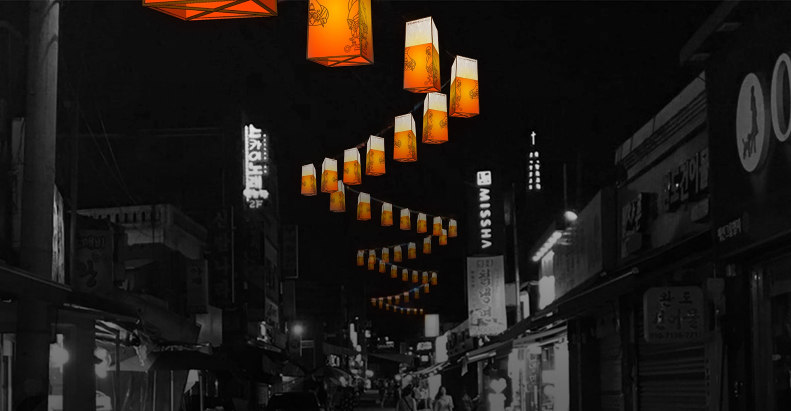
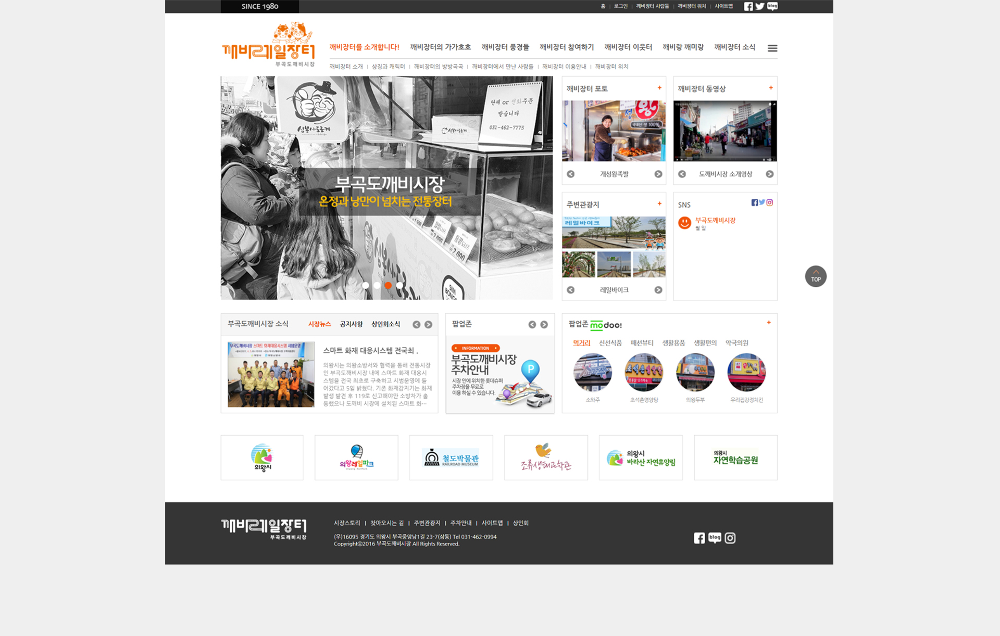

깨비레일장터 부곡도깨비시장

OVERVIEW
부곡 도깨비 전통시장 웹디자인은 시장 상인들의 요구사항 분석으로 콘텐츠 관리시스템을 구축하여 효율성이 증대되도록 서비스를 구축하였다.
연령 타겟인 40~50대도 쉽게 사용이 가능한 표준 인터페이스와 단일 로그인 환경을 마련하고, 안정적인 운영이 가능하도록 추진하였다.
또한 부곡 도깨비 시장 공식 홈페이지로서의 센터의 역할 및 사업을 효과적으로 홍보할 수 있는 방향으로 홈페이지를 디자인하였다.
- TYPE.
- Wed Design
- CLIENT.
- 깨비레일장터 부곡도깨비시장
- Individual work.
- 2016.12~2017.01 (1 weeks)
- 작업내역
- 웹디자인(포토샵)
